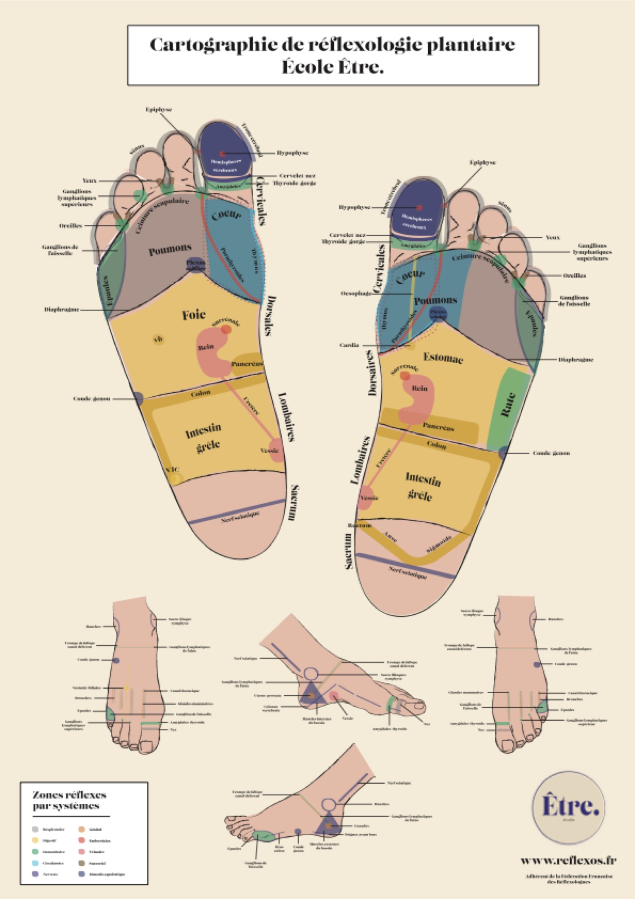

Qu'est-ce que la réflexologie ?
7 200 terminaisons nerveuses dans chaque pied.
En quelques mots
La réflexologie plantaire est une technique manuelle qui consiste à exercer des pressions rythmées sur des zones réflexes de vos pieds. Ces zones sont reliées, par l'intermédiaire de terminaisons nerveuses, à différents organes, glandes ou parties du corps.
L'objectif
Aider le corps à retrouver son équilibre naturel par auto-régulation, soulager les tensions et favoriser le bien-être global.
Bon à savoir
La réflexologie plantaire est une pratique de bien-être complémentaire à la pédicurie-podologie. Elle ne se substitue en aucun cas à un suivi médical. Le bilan n'est pas un diagnostic, mais il sert au praticien à établir un protocole de massage adapté. Le réflexologue ne soigne pas, ne guérit pas.

Dans quel cas ?
Indications
- En cas de stress : chronique, à l'approche d'un examen, à la suite d'un événement marquant…
- En cas de déséquilibre ou de troubles d'un système : respiratoire, digestif, sommeil…
- En cas de douleurs musculaires et/ou articulaires : arthrose, troubles inflammatoires, tendinite
- Au début du printemps, avant l'arrivée des pollens, en cas d'allergie
- En cas de problèmes cutanés : psoriasis, eczéma…
- Si vous ressentez une sensation de jambes lourdes
Contre-indications
Il n'est pas recommandé de faire une séance si :
- Vous êtes malade ou avez de la fièvre
- Vous êtes enceinte de moins de 3 mois
- Vous avez une phlébite
- Vous avez eu une entorse à une cheville il y a moins de 3 mois
Le déroulé et les bienfaits
Déroulé d'une séance
La séance débute par un échange, afin d'évoquer les raisons de votre venue et d'estimer le degré d'inconfort ressenti au quotidien. Cela me permet d'établir un protocole adapté à vos besoins.
Une fois dans le fauteuil, je commence toujours par des mouvements de détente du pied, ce qui permet à mes mains de faire connaissance avec vos pieds. Je réalise ensuite le protocole complet envisagé pour vous, que j'ajuste selon vos besoins et mes ressentis.
Vous êtes confortablement installé(e) dans un fauteuil de soin, en position semi-allongée, centre de gravité zéro et jambes relevées. Un plaid est à votre disposition si vous le souhaitez (en vous détendant, le corps se refroidit légèrement). Il se peut que vous bâilliez, que vous vous endormiez ou que vos yeux pleurent de détente : chaque corps réagit à sa manière.
Les bienfaits
- Réduction du stress en favorisant un état de relaxation
- Diminution de l'anxiété
- Soulagement de certaines douleurs, en complément des traitements habituels
- Amélioration du bien-être général et de la qualité de vie
- Amélioration du cycle de sommeil
- Diminution de certains troubles du quotidien
Effets secondaires possibles
Ils peuvent survenir 2 à 3 semaines après la séance. La réflexologie contribuant à la détoxification du corps, ce processus peut entraîner une modification temporaire du transit, de légers maux de tête, des urines plus foncées, une faim plus importante et un regain d'énergie, une brève sensation nauséeuse… Cela varie selon la personne, son niveau de vitalité et le type de séance.
Il est conseillé de se reposer après la séance et de bien s'hydrater. Le nombre de séances varie selon chaque individu, la durée du trouble et la capacité du corps à évoluer.